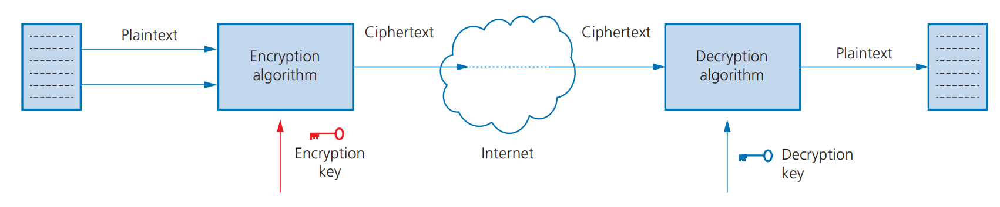
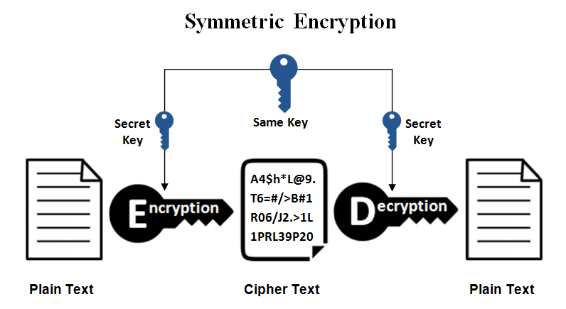
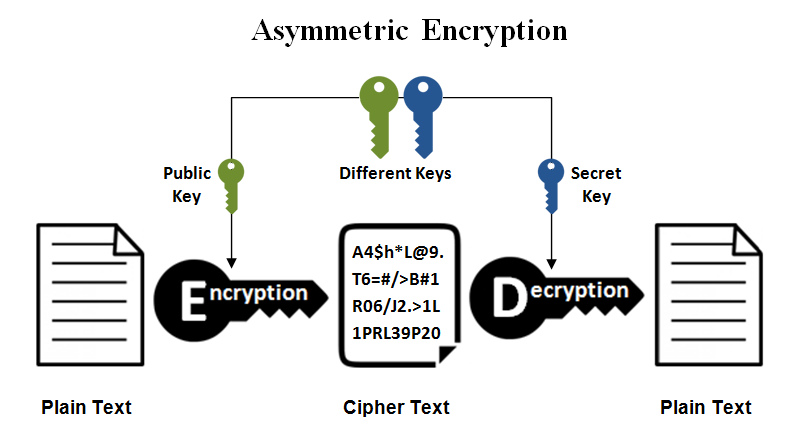

2.3 Encryption
Computer Science IGCSE notes, prepared by Dr. Hamdeni
2.3a: Understand the need for and purpose of encryption when transmitting data
-
Encryption protects data sent over networks by converting readable text into unreadable
ciphertext
so only the intended recipient can make sense of it using the correct key; it reduces the impact of
interception
but does not stop interception itself.
- The original readable data is called plaintext, and after an encryption algorithm is applied the result is called ciphertext.
- An encryption algorithm uses a key to scramble plaintext into ciphertext, and the receiving device uses the appropriate key to decrypt the ciphertext back into plaintext.
- Security protocol example: SSL (Secure Sockets Layer) protects data in transit by combining encryption with digital certificates for authentication.

- Sensitive data to encrypt in transit: Credit card or bank details, medical records, and legal documents should be encrypted when sent across public networks because intercepted messages would otherwise reveal confidential information.
- Interception view of ciphertext. If a hacker intercepts encrypted data during transmission, they see scrambled text like "GQVQ..." instead of "COMPUTER," which shows why encrypted data is unreadable without the correct key.
- Postcard vs locked envelope. An unencrypted message is like a postcard anyone on the route can read, while an encrypted message is like a sealed envelope locked with a key that only the intended reader can open.
2.3b: Understand how data is encrypted using symmetric and asymmetric encryption
- Symmetric encryption uses a single shared key for both encryption and decryption.
- Typical flow: encrypt the plaintext with the shared key to produce ciphertext, send the ciphertext and provide the same shared key to the receiver in a separate message, then the receiver uses that shared key to decrypt the ciphertext back to plaintext.
- Main drawback: the single shared key must be transmitted to the receiver, which creates a risk of interception and makes keeping the key secret difficult.

- Example: digit-shift illustration of symmetric encryption. A 10-digit key such as 4 2 9 1 3 6 2 8 5 6 can instruct how far to shift each letter to form ciphertext; applying the reverse shifts with the same key decrypts the message.
- Asymmetric encryption uses two related keys: a public key that is shared and a private key that is kept secret; data encrypted with the public key is decrypted with the matching private key.
- Communication steps: the sender obtains the recipient’s public key and encrypts the plaintext; the recipient uses their private key to decrypt the received ciphertext.
- One-to-many communication: a person can share their public key with many senders; each sender uses that public key to encrypt a message, and only the private key owner can decrypt the received ciphertext.
- Asymmetric encryption was designed to overcome the key sharing risk in symmetric encryption, because no secret key needs to be sent over the network.
- Security comparison: symmetric approaches are generally less secure than asymmetric approaches because a single shared key must be distributed.

- Example: online banking with public and private keys. Banks use asymmetric encryption to protect sensitive online transaction data; senders encrypt using the bank’s public key and the bank decrypts with its private key, illustrating how confidentiality is maintained without sharing a secret key.
- Public padlocks and a private key. Imagine you hand out open padlocks to everyone. Anyone can lock a box for you with those padlocks (public keys), but only you have the single key that opens them (your private key).